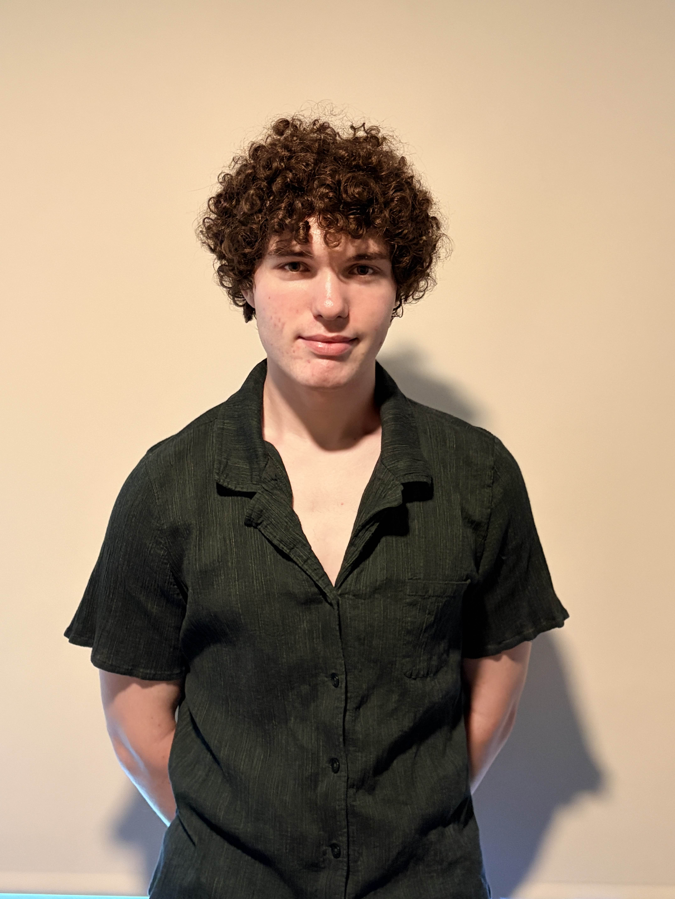

I build hardware and signal processing tools for environmental research. Right now I study how ocean acidification affects fish schooling at UC San Diego's Di Santo Lab, and I lead electrical design for a humanoid robot at Triton Droids. I work mostly with PCB design, embedded firmware, and MATLAB.
I built a MATLAB-based analysis pipeline for my research in the Di Santo Lab. It processes high-speed video of fish swimming near flapping foils, extracts kinematic profiles (curvature, frequency, amplitude), and compares behavior across pH conditions. This is the core tool I use for my environmental research.
I designed a sensorized glove that detects hand gestures using a custom PCB and classifies them with a machine learning algorithm. Full hardware design in KiCad with ESP32-S3.
I built a line-following robot for ECE 5 using photoresistors and a PID control loop. My team won 1st place overall. Tuning the algorithm against real mechanical inconsistency was the hard part.
Self-balancing robot, Mini Aloha bimanual robot, lemon-battery game, LM386 speaker amplifier. Each one is a standalone build tackling a different engineering problem.
I wrote 14 Spigot plugins in Java for a private server. The most complex is Manhunt — real-time position tracking, dimension-aware compass, event-driven state management.
Expected Class of 2028
I am drawn to systems that are hard to measure. Whether it is a fish swimming in a flow tank, a hand making a gesture, or a robot reacting to a track, the interesting engineering problems all share the same structure: a physical system generating a continuous, noisy signal, and the challenge of pulling something meaningful out of it.
I want to apply engineering to problems that span fields — environmental sensing, bio-inspired robotics, and tools that make complex data usable by researchers who aren't engineers. I plan to pursue graduate study and eventually run my own research.